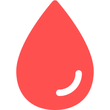

献血者数予測AI
(全国 | {{date}}更新)
私たちは当サイトの運営を通じて、過不足のない献血供給に貢献できることを目指しています。
地図をクリックすると、「都道府ごとのデータ」がご覧いただけます。
現在の献血状況
(全国 | {{date}}更新)
当サイトは献血の啓発活動を行うために開設されました。
地図をクリックすると、「都道府ごとのデータ」がご覧いただけます。
数字で見る献血事業
(全国 | {{date}}更新)
これまで献血に協力していただいた人数

0人
これまでに献血された血液の総量

0L
献血ルームの総数

0箇所